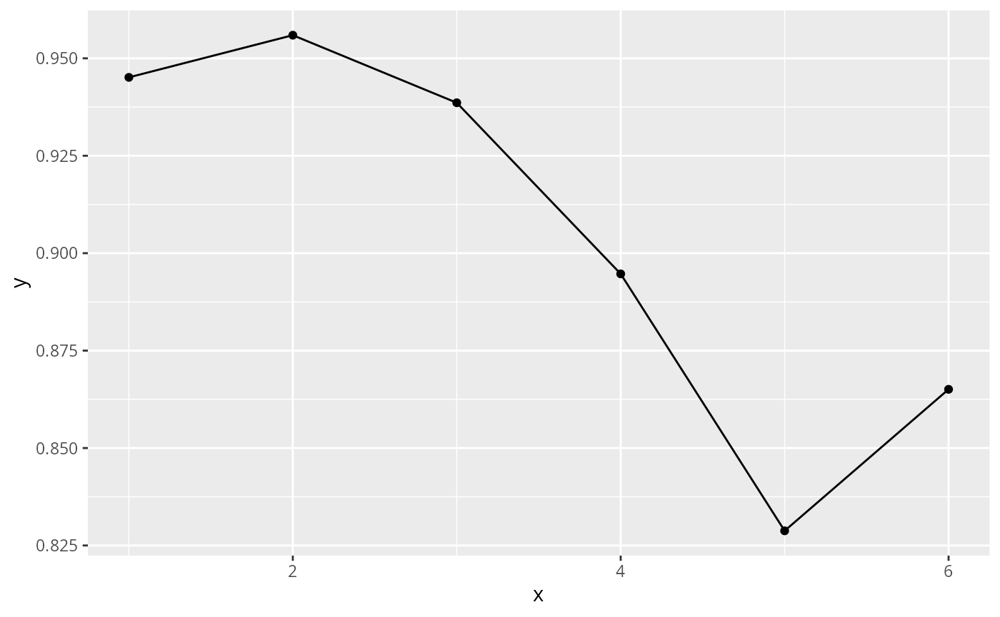
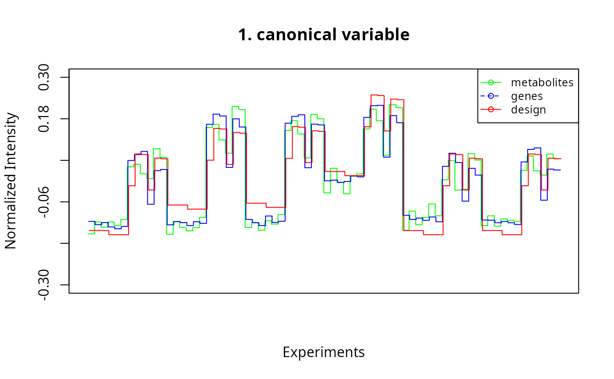
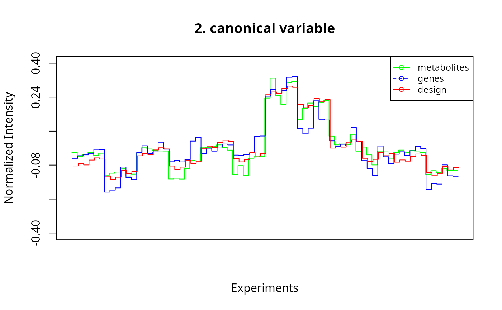
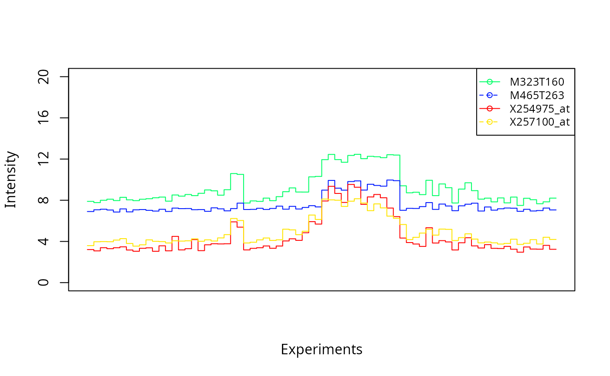
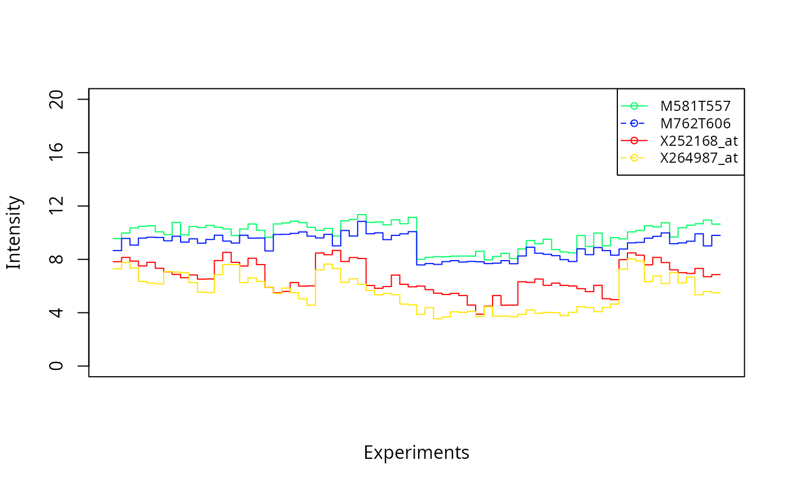
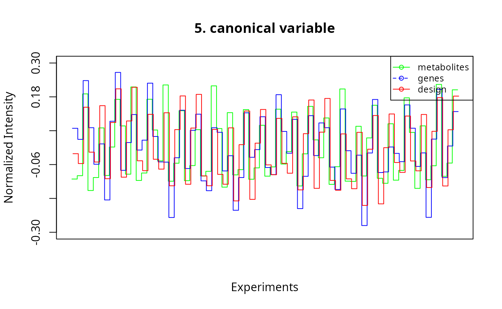
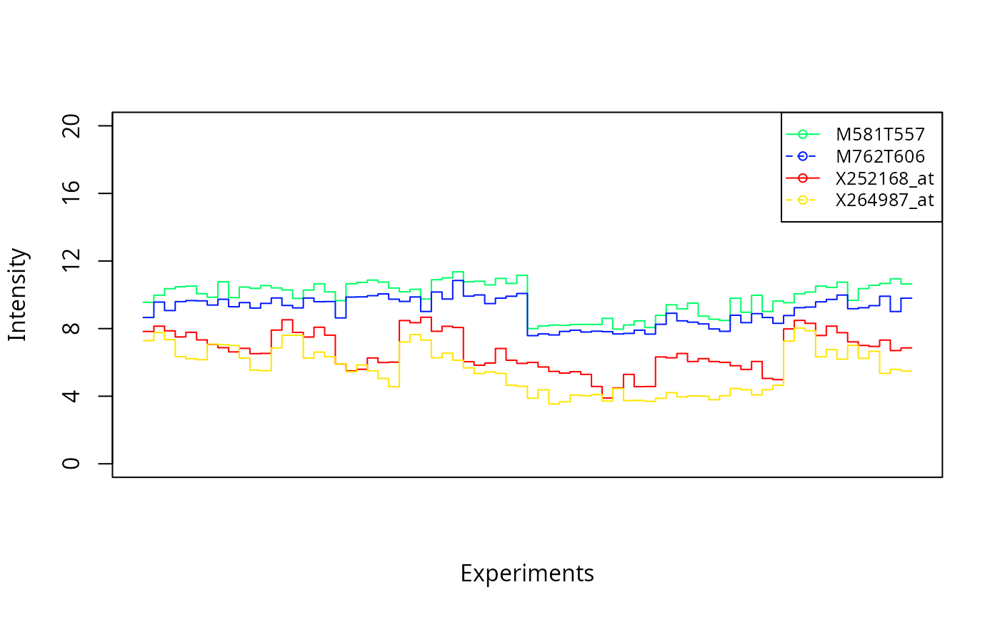
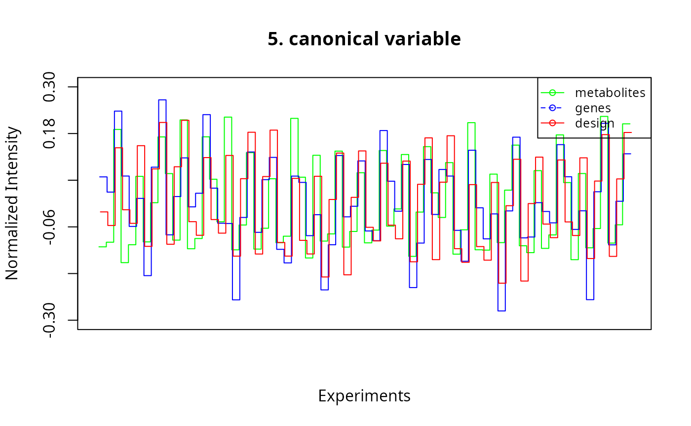

Supervised Penalized Canonical Correlation Analysis with the spCCA package
Andrea Thum
andrea.thum@informatik.uni-halle.deSteffen Neumann
sneumann@ipb-halle.despCCA.RmdAbstract
The supervised penalized canonical correlation approach (spCCA) is an extension of the penalized CCA, where the experimental design is used as a third data set (making the analysis supervised), and the correlation of the biological data sets with the design data set is maximized to find interpretable and meaningful canonical variables. This vignette shows the spCCA analysis on a data set of Arabidopsis thaliana with gene expression and metabolite intensity measurements, resulting in eight significant canonical variables.
## ── Attaching core tidyverse packages ──────────────────────── tidyverse 2.0.0 ──
## ✔ dplyr 1.1.4 ✔ readr 2.1.5
## ✔ forcats 1.0.0 ✔ stringr 1.5.1
## ✔ ggplot2 3.5.1 ✔ tibble 3.2.1
## ✔ lubridate 1.9.3 ✔ tidyr 1.3.1
## ✔ purrr 1.0.2
## ── Conflicts ────────────────────────────────────────── tidyverse_conflicts() ──
## ✖ dplyr::filter() masks stats::filter()
## ✖ dplyr::lag() masks stats::lag()
## ℹ Use the conflicted package (<http://conflicted.r-lib.org/>) to force all conflicts to become errors
##
## Attaching package: 'kableExtra'
##
##
## The following object is masked from 'package:dplyr':
##
## group_rowsDatasets
We reduced the data sets by excluding features with low variance (threshold chosen σ < 1 for genes and σ < 0.4 for metabolites), resulting in a 72 × 252 LC/MS signal intensity matrix (X), and a 72 × 1277 gene expression matrix (Y).
MTBLS18_path <- system.file("arXiv.1405.1534", "MTBLS18.csv",
package = "spCCA")
EMTAB3287_path <- system.file("arXiv.1405.1534", "E-MTAB-3287.csv",
package = "spCCA")
SAMEG179892_path <- system.file("arXiv.1405.1534", "SAMEG179892.csv",
package = "spCCA")
## Nicer order of the design factors
classorder <- rev(c("Pinf",
"GL1","Pen2Alone","Erp1","Erp2","D",
"DayNight",
"Replicate2","Replicate3","Pinf.Culture3","Pinf.Culture2"))
X <- as.matrix(read.csv(MTBLS18_path, row.names = 1))
Y <- as.matrix(read.csv(EMTAB3287_path, row.names = 1))
Z <- as.matrix(read.csv(SAMEG179892_path, row.names = 1))[,classorder]
## Enforce same sample names, re-using Metabolomics sample names
rownames(Z) <- rownames(Y) <- rownames(X)Data visualisation
Show a graphical representation of the experimental design factors. Then, check the distribution of values in the biological data sets.
TODO: double check x position of the samples and actual factor levels for the experiments/samples.
plot(Z[,"DayNight"]*0.9, main="Experimental Design Factors", type="s",
xlab="Sample", ylab="",
ylim=c(0,ncol(Z)), xaxt="n", yaxt="n")
axis(1, at=seq(0, along=rownames(X)), labels=rownames(X),
las=2, cex.axis=1/(nrow(Z)/25))
axis(2, at=seq(0, along=colnames(Z)), labels=colnames(Z),
las=2, cex.axis=0.6)
abline(v=seq(6.5, along=rownames(X), by=6), col="grey", lty=2)
abline(v=seq(12.5, along=rownames(X), by=12), col="grey", lty=1)
i<-0
dummy <- sapply(colnames(Z), function(f) { lines(Z[,f]*0.9+i, col=i, type="s"); i<<-i+1 })spCCA
Unsure how to perform the “ten-fold repeated hold-out sampling” mentioned in the paper.
numCV <- 6 # number of canonical variables to calculate
# Define the grid size based on manpage
end <- c(1.0, 0.2, 2.0)
step <- c(0.05, 0.01, 0.1)
CCA3 <- getCCA3(X=X, Y=Y, Z=Z,
numCV=numCV,
end=end, step=step,
n.r = 5, ## number of repeats, increase to 10 when parameters are stable
max.counter.test = 5 ## number of random start vectors for iteration, increase to 10-20 when parameters are stable
)
#CCA3 <- getCCA3(X=X, Y=Y, Z=Z, numCV=9, end=end, step=step)The higher the lambdas, the more sparse the canonical variables will be.
The parameters for the lambda grid search depend on the number of features (rows) in the data matrices.
The end value is inverse proportional to the number of features. For the metabolomics data with n=252 rows, an end value of 1.0 could be a good value. For the transcriptomics data with n=1277 rows, an end value of 0.2 could be a good value. For the design matrix with n=11 design factors, an end value of 2.0 could be a good value.
The step size is inverse proportional to the number of features. For the metabolomics data with n=252 rows, a step size of 0.05 could be a good value. For the transcriptomics data with n=1277 rows, a step size of 0.01 or slightly smaller is a good value. For the design matrix with n=11 design factors, a step size of 0.1 could be a good value.
step size 0.01 is a good number for sets with 1000 features
Correlation of canonical variables
The correlation of the canonical variables is a measure how well the experimental design explains the experimental data. A sharp drop in the values can be a hint to use fewer canonical variables.
Unsure where to get significance threshold, must be somewhere in
get.best.lambdas().
#plot(CCA3$corr, type="l")
ggplot(data=data.frame(x=seq(along=CCA3$corr), y=CCA3$corr),
mapping=aes(x = x, y = y)) +
geom_line() +
geom_point()
 

Details of canonical variables
numCV <- 1
topN <- 1:10
kable(CCA3$cc3.weight.z[order(abs(CCA3$cc3.weight.z[,numCV]), decreasing=TRUE)[topN], numCV],
digits=3) %>% kable_styling(full_width = F, position = "left")| x | |
|---|---|
| Pinf | 0.696 |
| Erp2 | 0.509 |
| Pinf.Culture2 | 0.275 |
| Pinf.Culture3 | 0.269 |
| Erp1 | 0.236 |
| Pen2Alone | 0.221 |
| DayNight | 0.065 |
| Replicate3 | 0.000 |
| Replicate2 | 0.000 |
| D | 0.000 |
kable(CCA3$cc3.weight.x[order(abs(CCA3$cc3.weight.x[,numCV]), decreasing=TRUE)[topN], numCV],
digits=3) %>% kable_styling(full_width = F, position = "center")| x | |
|---|---|
| M217T285 | 0.311 |
| M249T195 | 0.298 |
| M155T338 | 0.284 |
| M201T406 | 0.280 |
| M307T215 | 0.273 |
| M144T409 | 0.253 |
| M217T326 | 0.249 |
| M321T229 | 0.234 |
| M155T236 | 0.227 |
| M391T510 | 0.221 |
kable(CCA3$cc3.weight.y[order(abs(CCA3$cc3.weight.y[,numCV]), decreasing=TRUE)[topN], numCV],
digits=3) %>% kable_styling(full_width = F, position = "right")| x | |
|---|---|
| X263948_at | 0.103 |
| X267567_at | 0.101 |
| X249481_at | 0.099 |
| X253099_s_at | 0.095 |
| X258277_at | 0.095 |
| X261005_at | 0.095 |
| X266267_at | 0.095 |
| X261021_at | 0.094 |
| X261216_at | 0.093 |
| X259403_at | 0.092 |
Join the tidyverse
# Combine the lists into a single data frame
canVars = as.tibble(cbind(canVar=seq(along=CCA3$corr), corr = CCA3$corr))## Warning: `as.tibble()` was deprecated in tibble 2.0.0.
## ℹ Please use `as_tibble()` instead.
## ℹ The signature and semantics have changed, see `?as_tibble`.
## This warning is displayed once every 8 hours.
## Call `lifecycle::last_lifecycle_warnings()` to see where this warning was
## generated.
lambdas <- data.frame(matrix=c("X", "Y", "Z")[seq_along(rownames(CCA3$lambda))],
CCA3$lambda)
colnames(lambdas) <- c("matrix", seq(1,ncol(lambdas)-1))
# convert lambdas from wide to long tibble
lambdas_long <- pivot_longer(as_tibble(lambdas),
cols=seq(2,ncol(lambdas)),
names_to="canVar",
names_transform = list(canVar = as.integer),
values_to="lambda")
# Convert the data frame to a tibble
combined_tibble <- inner_join(canVars, lambdas_long, by="canVar")
# Print the tibble
print(combined_tibble)## # A tibble: 18 × 4
## canVar corr matrix lambda
## <dbl> <dbl> <chr> <dbl>
## 1 1 0.945 X 0.25
## 2 1 0.945 Y 0.07
## 3 1 0.945 Z 0.1
## 4 2 0.956 X 0.2
## 5 2 0.956 Y 0.09
## 6 2 0.956 Z 0
## 7 3 0.939 X 0.2
## 8 3 0.939 Y 0.08
## 9 3 0.939 Z 0.2
## 10 4 0.895 X 0.2
## 11 4 0.895 Y 0.1
## 12 4 0.895 Z 0.1
## 13 5 0.829 X 0.2
## 14 5 0.829 Y 0.14
## 15 5 0.829 Z 0
## 16 6 0.865 X 0.3
## 17 6 0.865 Y 0.1
## 18 6 0.865 Z 0.4Join the tidyverse
canVarX <- data.frame(matrix="X", sampleName=rownames(CCA3$cc3.CV.x), CCA3$cc3.CV.x)
colnames(canVarX) <- c("matrix", "sampleName", seq(1,ncol(canVarX)-2))
canVarY <- data.frame(matrix="Y", sampleName=rownames(CCA3$cc3.CV.y), CCA3$cc3.CV.y)
colnames(canVarY) <- c("matrix", "sampleName", seq(1,ncol(canVarY)-2))
canVarZ <- data.frame(matrix="Z", sampleName=rownames(CCA3$cc3.CV.z), CCA3$cc3.CV.z)
colnames(canVarZ) <- c("matrix", "sampleName", seq(1,ncol(canVarZ)-2))
canVar <- rbind(canVarX, canVarY, canVarZ)
canVar_long <- pivot_longer(as.tibble(canVar),
cols=seq(3,ncol(canVar)),
names_to="canVar",
names_transform = list(canVar = as.integer))
## ggplot canVar_long for each matrix for canVar==1
ggplot(data=canVar_long %>% filter(canVar==1),
mapping=aes(x = sampleName, y = value, color=matrix, group=matrix)) +
geom_step(direction = "mid") +
geom_point() +
theme(axis.text.x = element_text(angle = 90, hjust = 1))Join the tidyverse
weightsX <- data.frame(matrix="X", featureName=rownames(CCA3$cc3.weight.x), CCA3$cc3.weight.x)
colnames(weightsX) <- c("matrix", "featureName", seq(1,ncol(weightsX)-2))
weightsY <- data.frame(matrix="Y", featureName=rownames(CCA3$cc3.weight.y), CCA3$cc3.weight.y)
colnames(weightsY) <- c("matrix", "featureName", seq(1,ncol(weightsY)-2))
weightsZ <- data.frame(matrix="Z", featureName=rownames(CCA3$cc3.weight.z), CCA3$cc3.weight.z)
colnames(weightsZ) <- c("matrix", "featureName", seq(1,ncol(weightsZ)-2))
weights <- rbind(weightsX, weightsY, weightsZ)
weights_long <- pivot_longer(as.tibble(weights),
cols=seq(3,ncol(weights)),
names_to="canVar",
names_transform = list(canVar = as.integer))
values <- as.tibble(bind_rows(data.frame(matrix="X", featureName=colnames(X), t(X)),
data.frame(matrix="Y", featureName=colnames(Y), t(Y)),
data.frame(matrix="Z", featureName=colnames(Z), t(Z))))
values_long <- pivot_longer(values,
cols=seq(3,ncol(values)),
names_to="sampleName")
## for each matrix, for each canVar, obtain the featureNames of the features with the hightest weights
topN <- 2
topFeatures <- weights_long %>% filter(matrix != "Z") %>%
group_by(matrix, canVar) %>%
top_n(topN, abs(value)) %>%
arrange(matrix, canVar, desc(abs(value)))
## for Each topFeature, multiply the corresponding value_long with the weight
topFeatures_values <- inner_join(topFeatures %>% filter(canVar==1),
values_long, by=c("matrix", "featureName")) %>%
mutate(weightedValue = value.x*value.y)
## ggplot topFeatures_values for each matrix for canVar==1
ggplot(data=topFeatures_values,
mapping=aes(x = sampleName, y = weightedValue, color=featureName, group=featureName)) +
geom_step(direction = "mid") +
geom_point() +
theme(axis.text.x = element_text(angle = 90, hjust = 1))Saving results
save.CCA(CCA3, file="CCA3")Session info
## R version 4.3.3 (2024-02-29)
## Platform: x86_64-pc-linux-gnu (64-bit)
## Running under: Ubuntu 24.04.1 LTS
##
## Matrix products: default
## BLAS: /usr/lib/x86_64-linux-gnu/blas/libblas.so.3.12.0
## LAPACK: /usr/lib/x86_64-linux-gnu/lapack/liblapack.so.3.12.0
##
## locale:
## [1] LC_CTYPE=en_US.UTF-8 LC_NUMERIC=C
## [3] LC_TIME=en_US.UTF-8 LC_COLLATE=en_US.UTF-8
## [5] LC_MONETARY=en_US.UTF-8 LC_MESSAGES=en_US.UTF-8
## [7] LC_PAPER=en_US.UTF-8 LC_NAME=C
## [9] LC_ADDRESS=C LC_TELEPHONE=C
## [11] LC_MEASUREMENT=en_US.UTF-8 LC_IDENTIFICATION=C
##
## time zone: Europe/Berlin
## tzcode source: system (glibc)
##
## attached base packages:
## [1] stats graphics grDevices utils datasets methods base
##
## other attached packages:
## [1] kableExtra_1.4.0 knitr_1.48 lubridate_1.9.3 forcats_1.0.0
## [5] stringr_1.5.1 dplyr_1.1.4 purrr_1.0.2 readr_2.1.5
## [9] tidyr_1.3.1 tibble_3.2.1 ggplot2_3.5.1 tidyverse_2.0.0
## [13] spCCA_0.1.6 BiocStyle_2.30.0
##
## loaded via a namespace (and not attached):
## [1] gtable_0.3.6 xfun_0.48 bslib_0.8.0
## [4] tzdb_0.4.0 vctrs_0.6.5 tools_4.3.3
## [7] generics_0.1.3 fansi_1.0.6 highr_0.11
## [10] pkgconfig_2.0.3 desc_1.4.3 lifecycle_1.0.4
## [13] compiler_4.3.3 farver_2.1.2 textshaping_0.3.7
## [16] munsell_0.5.1 codetools_0.2-19 htmltools_0.5.8.1
## [19] sass_0.4.9 yaml_2.3.10 pillar_1.9.0
## [22] pkgdown_2.0.7 crayon_1.5.3 jquerylib_0.1.4
## [25] MASS_7.3-60.0.1 cachem_1.1.0 tidyselect_1.2.1
## [28] digest_0.6.37 stringi_1.8.4 bookdown_0.37
## [31] labeling_0.4.3 fastmap_1.2.0 grid_4.3.3
## [34] colorspace_2.1-1 cli_3.6.3 magrittr_2.0.3
## [37] utf8_1.2.4 withr_3.0.2 scales_1.3.0
## [40] timechange_0.3.0 rmarkdown_2.28 ragg_1.2.7
## [43] hms_1.1.3 memoise_2.0.1 evaluate_1.0.1
## [46] viridisLite_0.4.2 rlang_1.1.4 glue_1.8.0
## [49] BiocManager_1.30.25 xml2_1.3.6 svglite_2.1.3
## [52] rstudioapi_0.15.0 jsonlite_1.8.9 R6_2.5.1
## [55] systemfonts_1.0.5 fs_1.6.4